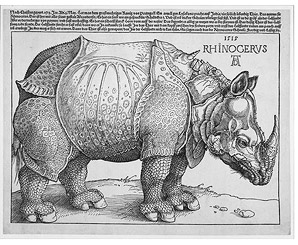
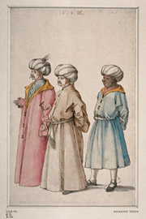
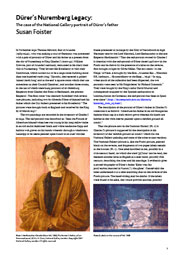
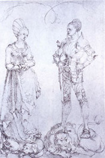
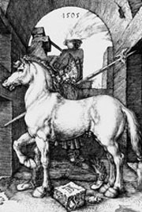
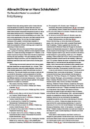
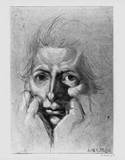
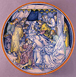

Albrecht
Dürer and his Legacy
OP
130
(ISBN
0 86159 130 5)
©
The Trustees of the British Museum 2004

To accompany the first exhibition to be
devoted to Albrecht Dürer in this country
for thirty years, Albrecht Dürer
and his Legacy (British Museum, 5 December
2002–23 March 2003), a conference
was held on 21 March 2003 to examine themes
and issues raised by the astonishing achievements
and influence of this extraordinary artist.
The papers are published here, edited by
Giulia
Bartrum, Curator of German prints and
drawings at the British Museum.
|

©
The British Museum |
 Dürer and Italy Revisited: the
German Connection
Dürer and Italy Revisited: the
German Connection |
Dr
Mark Evans
©
The Trustees of the British Museum
2004
Download |

Dürer, after
Bellini, Three Orientals.
© The British Museum |
| |
Dürer's Nuremberg Legacy: The case of the National Gallery portrait of Durer's father |
Dr
Susan Foister
©
The Trustees of the British Museum
2006
Download |

Dürer, after
Bellini, Three Orientals.
© The British Museum |
| |
|
Dürer
and Sculpture |
|
Norbert
Jopek
©
The Trustees of the British Museum
2004
Download
|

Dürer,
Study for a tomb.
Oxford, Christ Church,
© Victoria and Albert Museum
Picture Library
|
|
|
|
Dürer's Model:
Reflections on Dürer and his Legacy |
|
Joseph Leo Koerner
©
The Trustees of the British Museum
2005
Download
|

Albrecht Dürer,
The Small Horse
© The British Museum
|
|
| Albrecht Dürer or Hans Shaufelein: The 'Benedict Master' reconsidered |
Dr Fritz Koreny
©
The Trustees of the British Museum
2006
Download |

Anon, Ferdinand
Columbus, Biblioteca
Colombina, Seville © photo author |
|
|
|
Humanist
Transmissions: Dürer, Erasmus
and the Print Collection of Ferdinand
Columbus |
Dr
Mark McDonald
©
The Trustees of the British Museum
2003
Broadband
(4.5mb)
Dial
up / Modem (1.7mb) |
Anon, Ferdinand
Columbus, Biblioteca
Colombina, Seville © photo author |
|
|
German
Draughtsmanship in the Age of Dürer
and Goethe: Parallels and Resonance
|
Hinrich
Sieveking
©
The Trustees of the British Museum
2004
Download
|

Fuseli, Self-Portrait.
© Victoria and Albert Museum
|
|
|
The Use of Dürer Prints as Sources
for Italian Renaissance Maiolica
Dora
Thornton
©
The Trustees of the British Museum
2004
Broadband
(4.6mb)
Dial
up / Modem (2.6mb) |

Maiolica
dish with the
Dormition of the Virgin,
© British Museum |
|
Contributions
by the following authors will be posted on the
site as and when they are ready
for publication:
Dr
Susan Foister, Curator of Early Northern
Paintings at the National Gallery, London,
Dürer's Nuremberg Legacy: The Case of the
National Gallery Portrait of Dürer's Father
Professor
Fritz Koreny, international expert
on Dürer and early northern art, Vienna,
Albrecht Dürer and Hans Schäufelein:
A Re-appraisal of Some Drawings
Copyright
of images shown with the conference papers resides
with the British Museum unless otherwise stated
Click
here for information on ordering British
Museum images; for images from other collections,
contact the owners.
LINKS
Albrecht
Dürer and his Legacy: the Graphic Work
of a Renaissance Artist,
Giulia Bartrum with contributions by Günter
Grass, Joseph L. Koerner and Ute Kuhlemann
The Art Newspaper / AXA Art prize-winning exhibition
catalogue, British Museum Press 2002
Maiolica in the North: The Archaeology
of Tin-glazed Earthenware in North-West Europe
c. 1500-1600,
D. Gaimster (ed), The British Museum, Occasional Paper No. 122, 1999
Objects of Virtue: Art in Renaissance Italy,
L. Syson and D. Thornton, British Museum Press 2004
British
Museum Compass tour of the Durer exhibition
A
British Museum factsheet on Dürer
The
Dürer House in Nuremberg
A
related exhibition at the National Gallery
Columbus
Print Collection Project
|